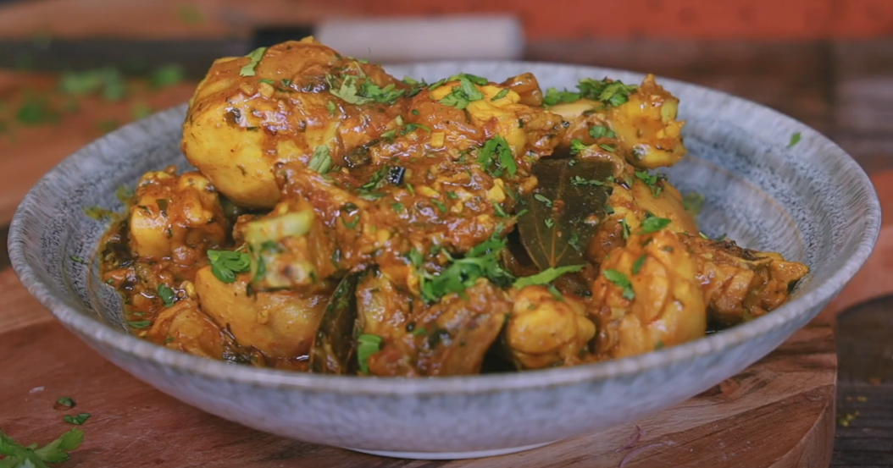

Garlic chicken curry

Recipe description
An easy to prepare indian chicken curry recipe with lots of spices and garlic.
Ingredients
- 1.5lb chicken
- 15 cloves of garlic
- 1 inch fresh ginger
- 1/2 cup thich plain yogurt
- 2 teaspoons salt
- 1/2 teaspoon sugar
- 1 medium size red onion
- 1 teaspoon tumeric powder
- 1 teaspoon cumin powder
- 1/2 teaspoon coriander powder
- 1/2 teaspoon chili powder
- 2 tablespoons oil
- 1 green chili
- 1/2 teaspoon garam masala powder
- 1/4 cup chopped cilantro leaves
Steps
- Grate or pound 10 garlic cloves along with ginger.
- Thinly slice the remaining 5 garlic cloves.
- If you are using chicken drumsticks, make sure to score the meat portion a couple of times.
- In a bowl add the chicken pieces along with yogurt, pounded garlic, ½ teaspoon turmeric and 1 teaspoon salt.
- Give it a mix nicely to coat all the chicken pieces. Keep it aside for minimum 4 hrs or overnight for maximum flavor blend.
- When ready, place a heavy bottom nonstick pan on the stove at medium heat.
- Pour the oil along with the sliced garlic, chopped green chili and chopped ginger.
- As the oil heats up, the garlic will start to sizzle and slowly turn golden brown.
- To the wok add the sliced onion. Sprinkle the rest of the salt, sugar and turmeric along with the spices (cumin powder, coriander powder and chili powder).
- Stir and cook the onion for 3 minutes, or until it’s golden brown.
- Then add the marinated chicken and stir it to incorporate everything.
- you are using boneless chicken cubes, it will take 15minutes to cook the chicken. If you use chicken with bones in, then it will take about 20 minutes.
- After 10 minutes of cooking the chicken, it will start to release water. Now depending on how much gravy you want, add water and let it continue cooking.
- Once the chicken is cooked, taste for salt and add any if needed.
- Finally sprinkle finely chopped cilantro leaves, garam masala powder and give it a mix.